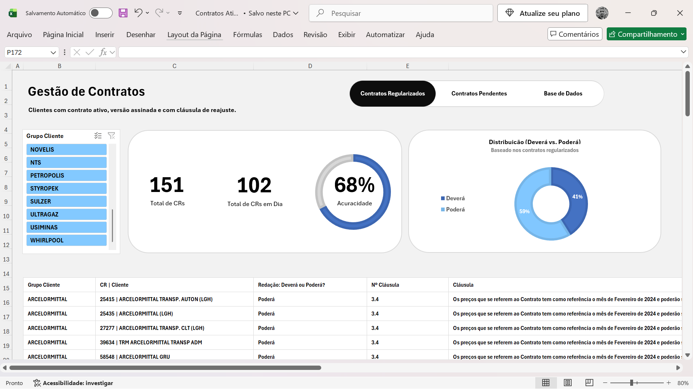
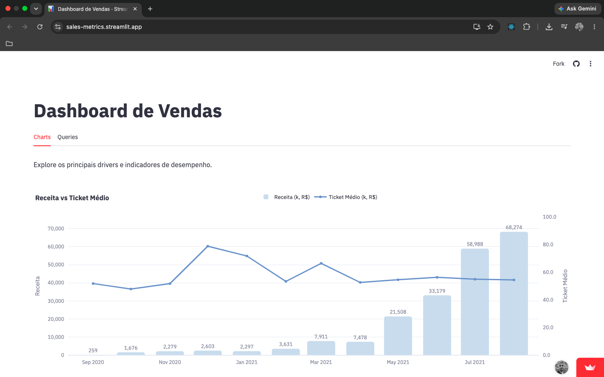

Analista de Dados
Atuo com a coleta e análise de dados complexos para obter informações que orientem as decisões de forma estratégica e melhorar o desempenho do negócio.
→ Excel e Power Point Avançado, experiência com consultas e análises SQL e criação de dashboards interativos com Streamlit.
-

Gestão de Contratos
Dashboard interativo projetado para explorar dados, cruzar informações estratégicas e extrair insights valiosos no próprio Excel.
-

Dashboard de Vendas de Automóveis
Projeto prático de análise de dados onde dados brutos armazenados em PostgreSQL foram transformados em um painel interativo dinâmico.
Vamos conversar?
Sinta-se à vontade para entrar em contato.
- E-mail contatowildermiranda@gmail.com
- LinkedIn linkedin.com/in/wildermiranda
- GitHub github.com/wildermiranda